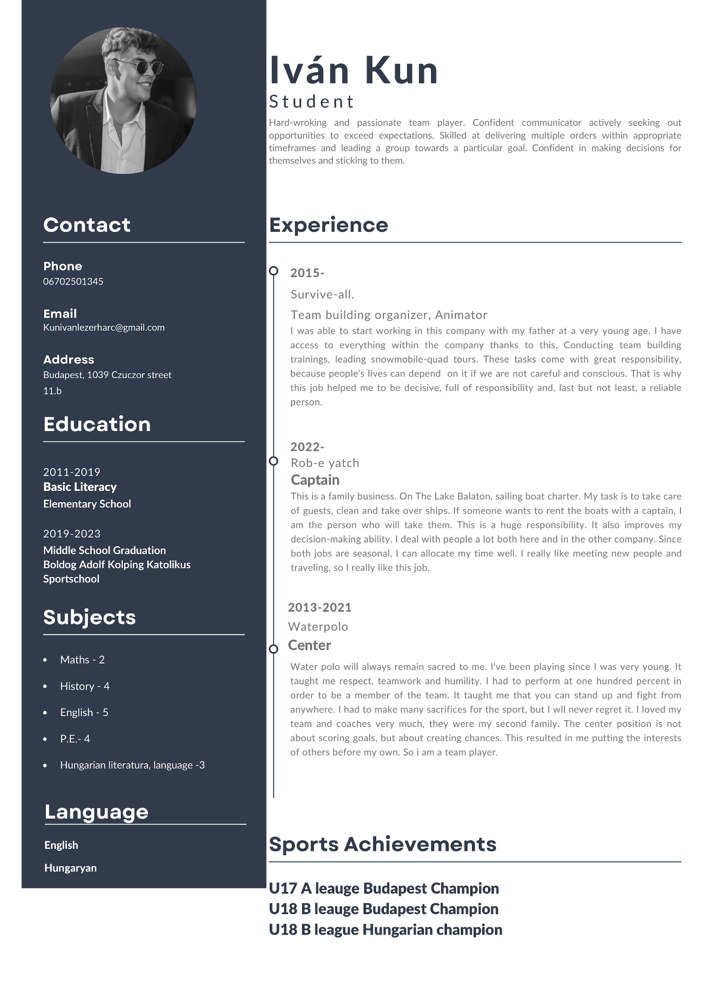

A creative and driven young man on the road to building extreme team-building adventures
I work part-time at Survive-All, my father’s company focused on outdoor and survival programs. This experience inspired my dream: to start my own company offering extreme, unforgettable team-building adventures. I also run a boat rental company owned by my family, where I’m responsible for operations and customer experiences.
Currently, I work in the Netherlands at MSR Cheesy, gaining valuable hospitality industry experience while continuing my academic journey.
I’m Ivan Kun, a 20-year-old student at NHL Stenden University. I come from Budapest, Hungary, where I grew up in a well-situated family. Since childhood, I’ve been dedicated to sports and discipline—I trained a lot and played water polo for 13 years, which taught me teamwork, endurance, and resilience.
I consider myself a strong and adventurous person who loves exploring new places and pushing limits. My hobbies include drumming, cycling, boxing, and working out. I also enjoy driving aimlessly just for the love of the road. One of my passions is my car—I take care of it like a true friend.
Specific: Find a second part-time job that aligns with my studies.
Measurable: Save up a minimum of €11,000 for a car upgrade and personal investments by the end of the academic year.
Achievable: Work at least 15 hours per week while maintaining my academic performance.
Relevant: The goal fits both my current financial needs and my long-term career path in hospitality and entrepreneurship.
Time-bound: Achieve this by July 2025.
Specific: I want to collect inspiration and ideas for my own company by observing how different businesses work and serve their customers.
Measurable: I will keep notes and screenshots in a private digital folder.
Achievable: I will do this in my free time when I visit places or see something interesting online.
Relevant: It helps me shape my future company and understand what works in real life.
Time-bound: I plan to build this collection over the next two years.
This personal goal supports my bigger ambition to start my own company without being too stressful or demanding.
This year I learned how to balance work and study more effectively and how to manage my time with more discipline.
Full Name: Ivan Kun
Nationality: Hungarian
Phone: +36 70 250 1345
Email: kunivanlezerharc@gmail.com
Education: NHL Stenden University of Applied Sciences – Hospitality Management
Work Experience:
Skills: Leadership, teamwork, customer service, physical resilience, problem solving
Languages: Hungarian (native), English
Computer Skills: Microsoft Office, Canva, social media content creation
LinkedIn: View my LinkedIn profile
After finishing my studies at NHL Stenden, I plan to start my own extreme team-building company within the next 3 years. My values, such as adventure, discipline, creativity, and authenticity, will be the foundation of my business. My past and present shape my future. My father's company taught me the ropes, and now I’m ready to build something of my own.
But I don’t just dream of career success. I want to build a life that includes family too. One of my biggest dreams is to become a father. I love kids and can’t wait to have a family of my own one day. Another dream of mine is to live in the United States. The energy, opportunities, and space for adventure in America inspire me, and I want to build my future there.
Based on MapsTell, I discovered I’m naturally active and action-oriented. I want to further develop my ability to listen and reflect more before acting. In the future, I want to be a leader who motivates others not by control, but by example, creativity, and authenticity. This fits perfectly with my goals of building a bold, people-centered team-building company.